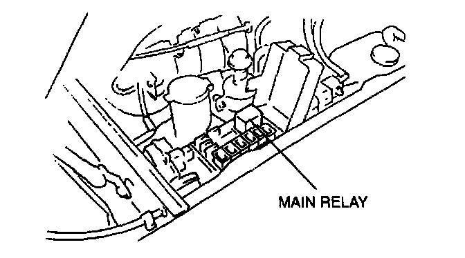
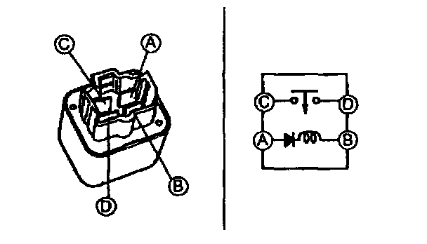
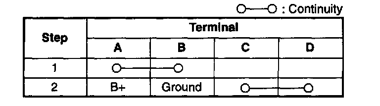

Main Relay Inspection
Inspection of ContinuityNOTE:
- Perform the following test only when detected.
1. Disconnect the negative battery cable.

2. Remove the main relay.

3. Inspect for continuity between terminals of the relay by using an ohmmeter.

Specification
4. If not as specified, replace the main relay, and inspect as follows:
Open circuit
- Reference voltage circuit (Main relay connector terminal A and ignition switch IG1 connector through common connector.)
- Reference voltage circuit (Main relay connector terminal C and battery (B+ terminal) connector through common connector.)
- Ground circuit (Main relay connector terminal B and ground circuit through common connector.)
Short circuit
- Main relay connector terminal A and ignition switch IG1 connector through common connector to ground.
- Main relay connector terminal C and battery (B+ terminal) through common connector to ground.
5. Reconnect the main relay connector.